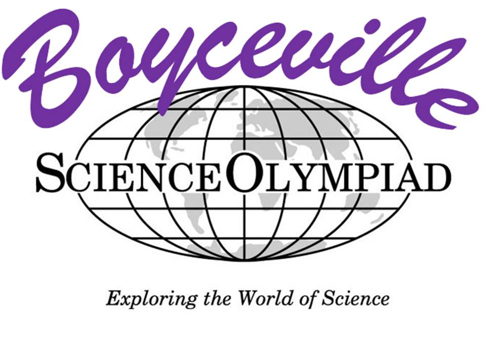

Our Varsity team delivered an outstanding performance at the 2025 Science Olympiad at the University of Pennsylvania (SOUP),
earning an impressive 2nd Place overall! Special congratulations to our medalists:
- Disease Detectives 4th Place
- Dynamic Planet 3rd Place
- Ecology 6th Place
- Fossils 1st
- Helicopter 5th Place
- Materials Science 5th Place
- Microbe Mission 4th Place
- Robot Tour 4th Place
- Tower 4th Place
- Write It Do It 2nd Place
Congratulations to all our competitors for their hard work and dedication. This season is shaping up to be one
for the books!
The 2025 Science Olympiad season continues to impress as our teams delivered stellar results at the NC Wolfpack
Regionals! Our Varsity team secured an incredible 1st Place, earning their spot at the State
Tournament! Meanwhile, our JV teams also performed exceptionally well, with JV1 finishing in 3rd
Place and JV2 securing 6th Place. Congratulations to all our competitors for their
hard work and dedication—onward to States!

The 2025 Science Olympiad season continues to shine as our teams delivered outstanding results at the Boyceville
Invitational, the second competition of the season! Our Varsity team earned an impressive 3rd
Place overall, showcasing their incredible talent and determination. Meanwhile, our JV teams also
made their presence felt, with JV1 finishing in 11th Place and JV2 securing 30th
Place. Congratulations to all our competitors for their hard work and dedication—this season is
shaping up to be unforgettable!
The 2025 Science Olympiad season is off to an incredible start! Our Varsity team dominated the Mason
Invitational, securing an impressive 1st Place overall! But that's not all—our JV teams also showcased their
talent, with JV1 finishing strong in 12th Place and JV2 finishing strong in 29th Place. This is just the beginning of what promises to be an amazing season. Congratulations to all our competitors for their hard work and
dedication!

Once again, our Varsity team excels at SOUP, bringing home numerous medals and clinching a 3rd place trophy. Special congrats to:
Detector Building 2nd Place: Thanush Patlolla and Kaiwen Yao
Disease Detectives 3rd Place: Angelina Li and Kevin Hu
Dyanmic Planet 3rd Place: William Feng and Smruti Patil
Optics 3rd Place: Thanush Patlolla and Kaiwen Yao
Scrambler 3rd Place: Kartik Nanduri and Saranga Rajagopalan
Wind Power 3rd Place: Thanush Patlolla and Kaiwen Yao

In a twist of fate, our JV teams have secured 3rd and 5th place at the CarSO Invitational, a remarkable and unexpected accomplishment! Surpassing some of the state's top teams, this achievement stands as a testament to their hard work and dedication.
In a remarkable turn of events, our varsity team has achieved 10th place at Nationals, marking a surprising and outstanding feat in the nation's most competitive Science Olympiad competition.

A surprising and outstanding achievement, our varsity team places 4th at SOUP—one of the most competitive invitationals in the nation.
Disease Detectives 1st place: Andy Sun & Angelina Li
Flight 3rd place: Olivia Liu & Kartik Nanduri
Dynamic Planet 4th place: Sukrith Velmineti & Vedang Singhal

For the fourth year in a row, Enloe becomes defending champs of Duke Science Olympiad Invitational. Special congrats to:
Detector Building 1st place: Colin Hanes & Thanush Patlolla
Remote Sensing 1st place: Skyler Qu & Nikhil Vemuri
Experimental Design 3rd place: Andy Sun & Angelina Li & Smruti Patil
Dynamic Planet 3rd place: Sukrith Velmineti & Vedang Singhal
Codebusters 3rd place: Suhan Asaigaoli & Smruti Patil & Serena Zhang
Chemistry Lab 3rd place: Colin Hanes & Nikhil Vemuri